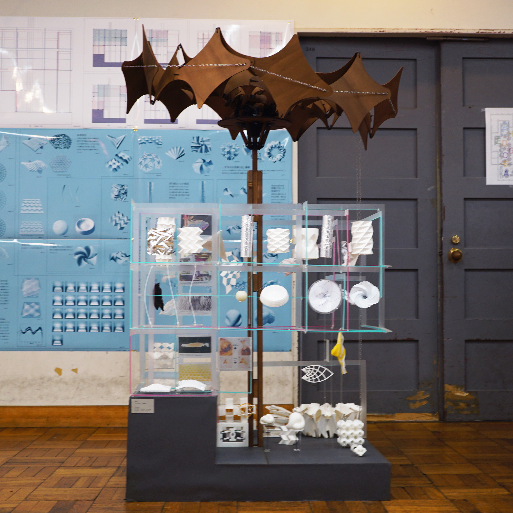
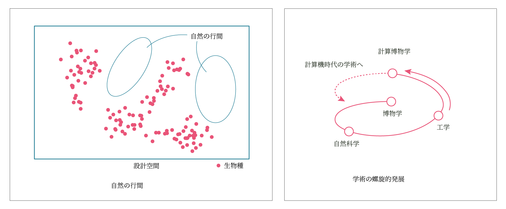
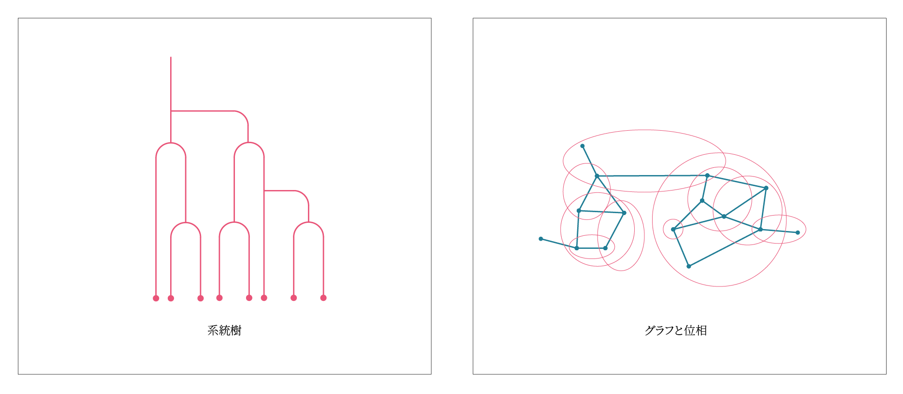
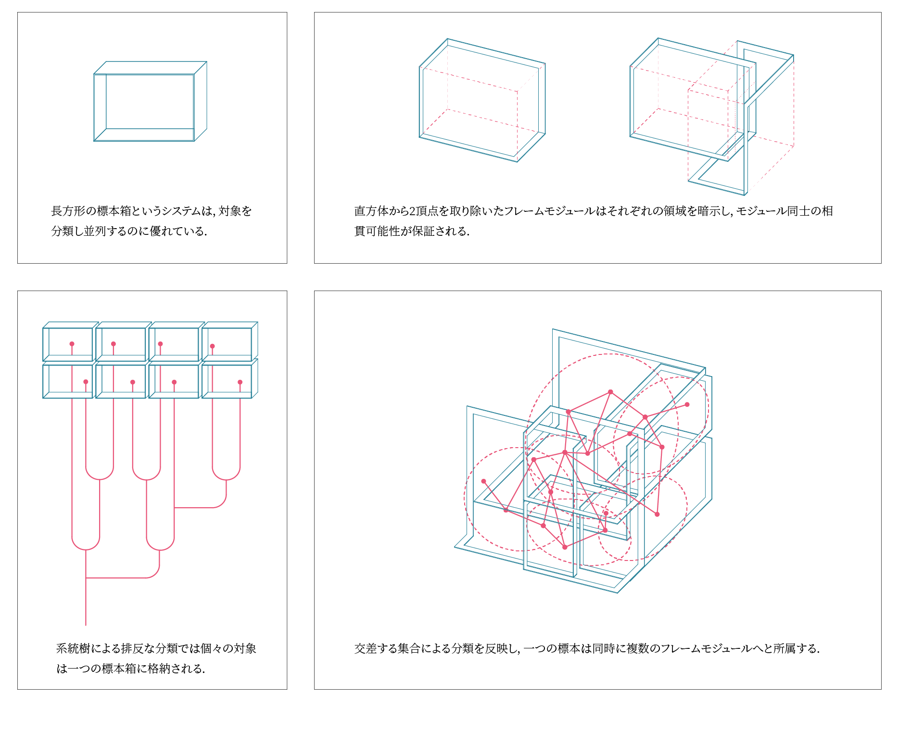
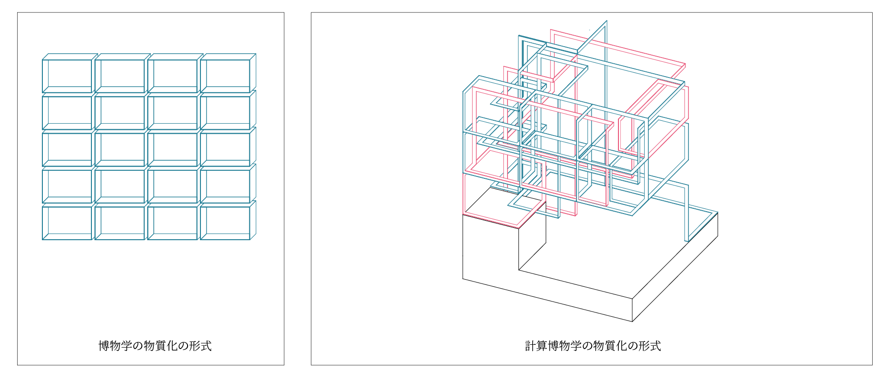
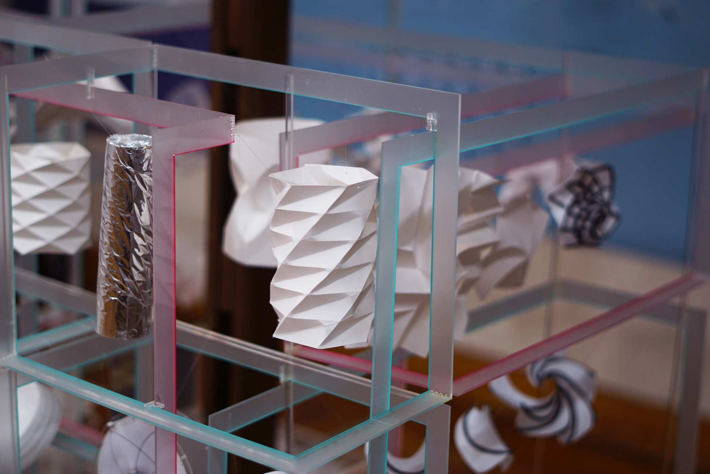
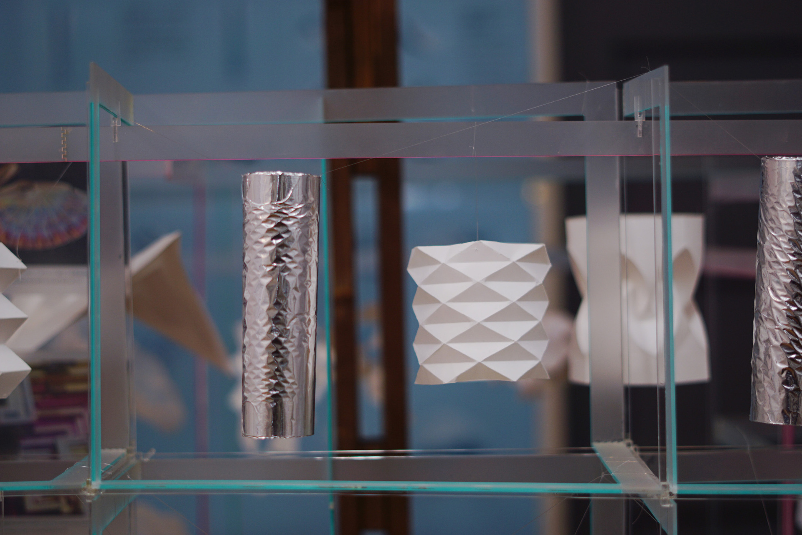
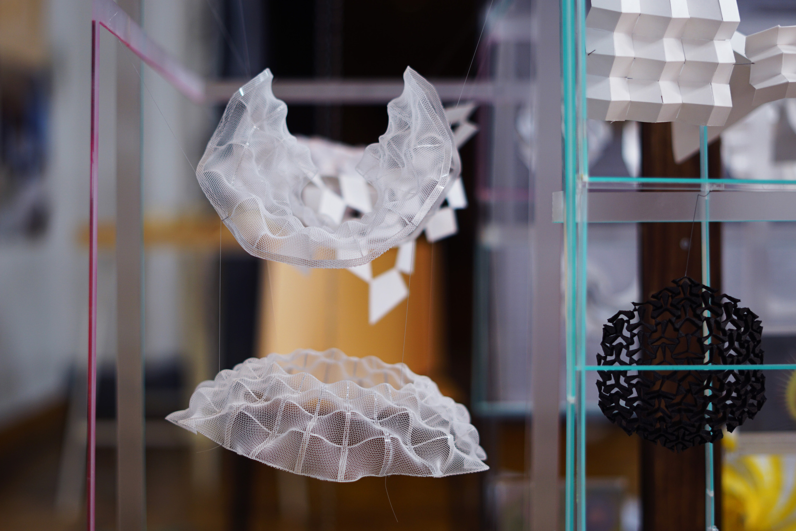

計算博物学序説
2023
制作協力：石川敬一，風祭覚，松本紘華
工学の研究によって発見される自然に存在しない対象を博物学的に収集，整理して位置づけを明確化する知の枠組みとして「計算博物学」を提唱する卒業制作．計算機時代の学術の土壌を育むことを野心とし，ものの形の取りうる可能性全体を含む設計空間についての洞察を得ることを目指す．
計算博物学的な記述のためのフォーマットを提案し，自身の行った複数の研究と関係づけられる研究を標本化して位置付けた立体展示を制作し，自身の研究の位置づけを明確化すると共に，知の枠組みの提案がもたらす新しい空間の形式を探求した．
写真撮影：伊藤大翔
keywords
展開構造，バイスタビリティ，折り紙，座屈，曲面設計，多自由度機構，計算博物学
受賞
東京大学工学部建築学科卒業制作 中村達太郎賞（Bコース最優秀賞）
- 
- 
博物学が自然の書物を開いたのに対して，計算博物学は自然から残された可能性「自然の行間」を読むことで計算機時代の学術の土壌を育むことを野心とする．
- 
博物学と計算博物学の対象の性質の違いはそれぞれの領域となる世界の記述モデルに変更を促す．特に生物を対象とした博物学は，対象が進化によるツリー構造によって広がっていたために，背反に対象を分類することが可能で，分類学が発展した．一方で計算博物学は連続な設計空間を世界像として想定する．対象は互いの接続関係と多数の集合への所属によって同定される．
- 
- 
記述方法の違いは物質化の形式の違いをもたらす．博物学では系統樹のモデルに対応した，標本箱の並列で典型的に物質化される．計算博物学に対して，相貫可能なフレームモジュールによる物質化の形式を提案する．
- 
- 
- 